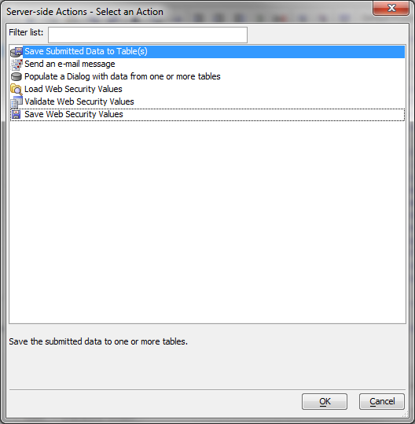
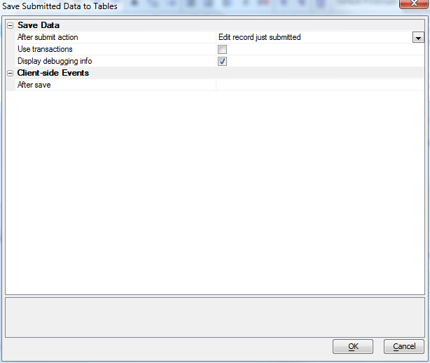
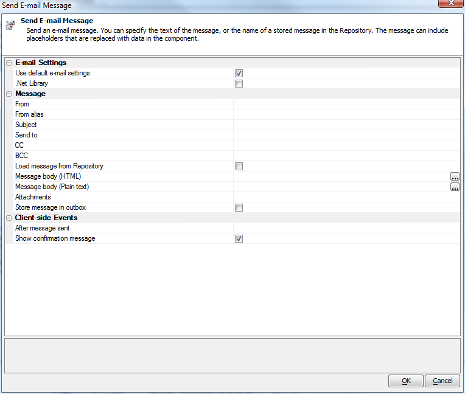
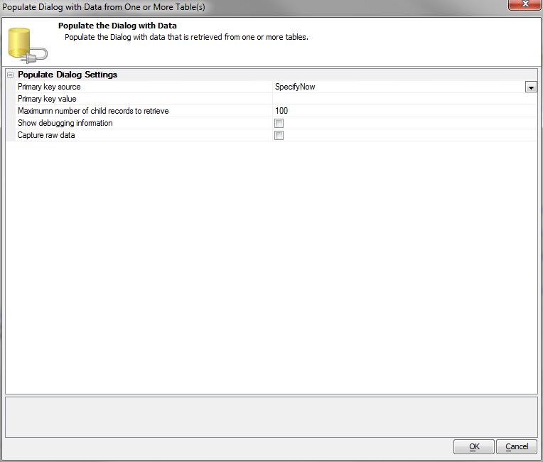
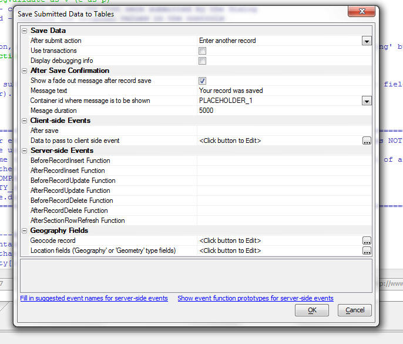
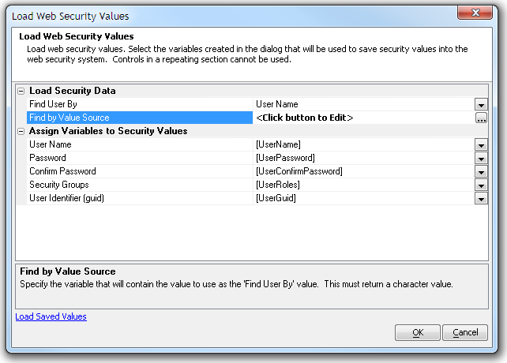
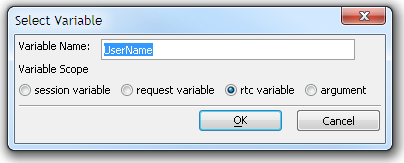
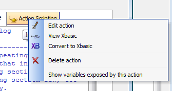

Server-side Action Scripting
As we saw in Genies for New Dialog Component V11, server-side Action Scripting can generate code for several major scenarios appropriate for the dialog afterDialogValidate and onDialogInitialize event handlers:
In addition to the action to save the data in a database (note that subscribers can display a fade out confirmation message to the user if the data was successfully saved when the user clicks the Submit button)

it can also create an action to send an email

and an action to populate the Dialog from one or more tables.

See video D20 for more details. Click here to see all Videos.
Save Submitted Data To Tables - SQL - Geocoding Addresses
Subscription featureWhen you save a record, you can automatically geocode addresses in the data at the same time the record is saved. This option only applies to SQL tables. For example, assume that the Dialog prompts for an address, city, state, postal code and country field and that the table to which the Dialog is bound has a latitude and longitude field.
When the record is saved after edits, or a new record is added you can automatically geocode the address in the address fields and get the latitude and longitude for the address and store those values in the table's latitude and longitude fields.
Watch Video - Part 1
Watch Video - Part 2
When you edit the Server Side action to save data to tables, you will see the additional properties for Geography Fields. This is where you can define that you want to geocode addresses when the record is saved.

Save Submitted Data To Tables - SQL - Compute Geography Field from Latitude/Longitude Values
Subscription featureIf a table has a Geography/Geometry field, when you edit the table and change either the latitude or longitude value on which the Geography/Geometry field is based, you can automatically compute a new value for the Geography/Geometry field. Encoding the Geography/Geometry field value is important if you want to do Geography searches on your data.
Watch video
Security Actions
The dialog includes Action Scripting options in the Server-side events to manage user information in the web security system. These action scripts include field mapping to allow the use of any field name in the dialog for the security fields.Only security fields that are active in the current security configuration are shown in the genie. There are three actions available.
Load Web Security Values Allows you to load data for a particular user from the Security Framework into controls in a Dialog component.

This will populate the controls with data from the web security system based on some user value passed to the action. It is added to the onDialogInitialize Server-side event. The value to identify the user can be passed to the action as a session variable, request variable, component rtc variable, or as an argument.

The value can be the userid, user identifier (guid), or ulink value associated with the record. It is recommended in Alpha Five V11 to use the security userid as the linking value to any external user table. The security userid value can be added to the external table to find a user record in that table.
The action returns a number of values, including the security value in each control as e.control.<fieldname>.
Validate Web Security Values Allows you to validate data before saving it back to the Security Framework tables.
This will validate the values that will be saved in the web security system. It is added to the dialogValidate Server-side event. The validation is based on the security settings and will return a number of values, including dialogValidate.hasError. If other events have security action scripting defined, the option Load Saved Values on the genie will load the field mapping from the other event.
Save Web Security Values Allows you to save submitted data to the Security Framework tables.
This will save the values to the web security system. It is added to the afterDialogValidate Server-side event. The action returns a number of values, including the security value saved for each control as rtc.data.<fieldname>. If other events have security action scripting defined, the option Load Saved Values on the genie will load the field mapping from the other event.
Post-creation work with Server-side Action Scripts
Once you have created a server-side action you can edit it and convert it to Xbasic. You can also look at the variables exposed by the action.
The Server-side Action Scripting mechanism would be easy for us to extend to other actions; we're open to suggestions.
Videos
Videos for New Dialog Component V11Videos for Dialog Component - Managing Data in the Security Framework V11